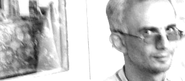

КОЛОРАДО
В тот морозный вечер я стоял на углу перекрестка улицы Иосифа Сталина и смотрел как наши припав к амбразурам баррикады лупили грузин из ружей и карабинов времен Кошты Бега. Оккупанты в свою очередь мочили наших из автоматов и пулеметов и пуль на это дело не жалели. Грохот от стрельбы был знатный, аж в ушах звенело, а толку никакого. Я мыслил так потому что из наших никто не пал, следовательно потери у грузин были не больше наших. Это бескровное шоу с элементами пиротехники продолжалось довольно долго но закончилось внезапно с появлением Колорадо. Он довольно грубо оттолкнул меня, так как я стоял у него на пути, и прошествовал к баррикаде, к одному из шоуменов. У последнего был до того свирепый вид, что ужас охватывал всякого на ком останавливался взгляд его. Но тут случилось нечто невероятное не укладывающееся в моей признаться не очень смекалистой голове. Увидев Колорадо, обладатель свирепого вида как-то сник и стал до того жалок, что мне захотелось ободрить его мужественными словами, но я пожалел о своем намерении, ибо тот отбросив свою винтовку хотел сдаться грузинам, но было уже поздно. Колорадо мгновенно очутился возле него и прикладом своего автомата ударил того по лицу. Свирепый шоумен немедленно рухнул на скользкий гололед и Колорадо ногами начал месить из неудавшегося предателя тесто для пирогов. С нашей стороны перестрелка прекратилась, все бросились смотреть на захватывающий дух драму, где было все: главный герой, который настиг проворовавшегося ублюдка и воздал ему да по заслугам. Какая-то женщина бросила к ногам Колорадо свою грязную косынку и тот, повинуясь древнему обычаю предков, отпрянул от своей жертвы. Поправляя кепку бейсболки на своей остроухой голове Колорадо двинулся прямо на меня и я порядком струхнул, хотя не чувствовал за собой никакой вины. Гроза прошла мимо и я облегченно вздохнул, но преждевременно как оказалось. Колорадо вернулся и сказал мне короткое, но грозное - пошли. Я был в диком недоумении, потому что не был знаком с ним лично, но тем не менее пошел за человеком, о котором ходили такие слухи, что кровь стыла в жилах. Внезапно он остановился и обернувшись ко мне хриплым голосом спросил, - у тебя есть оружие? Я ответил, что есть и вытащив спрятанный под телогрейкой обрез двустволки показал его диво-воину. Увидев мой пугач Колорадо усмехнулся и предложил мне: если хочешь увидеть грузин на самом деле, то пошли со мной. Я не хотел, но улыбнувшись согласился. Он перелез через забор в сад заброшенного дома. Я последовал его примеру и увязая по колено в залежалый сверху замерзший снег двинулся вперед за своим новым товарищем. Я конечно же был рад тому что Колорадо взял именно меня на дело и даже гордился оказанной мне честью. Но меня тошнило от страха при мысли о том, что нас ждало там впереди, куда мы так стремительно продвигались. Насколько я понял мы пробирались в тыл к грузинам и чтоб не засветиться шли огородами. То и дело нам попадались пустые, брошенные своими хозяевами дома, которых еще не успела коснуться рука мародера. Меня невольно тянуло к этим жилищам одабычиться, и только присутствие Колорадо останавливало меня от этого веселого и радостного предприятия. Но тут перед моим взором предстал великолепный особняк подпольного миллионера Боле, дочка которого отвергла моего друга Хряка и вышла замуж за какого-то недоумка грузина. Брак по расчету, оба из богатых семей. Сука могла бы подать руку помощи Хряку, отец которого спился и в последнее время опохмелялся тройным одеколоном, самая низшая стадия алкоголизма в нашем городе. Ну так погодите же, думал я в благородном негодовании, я вынесу все ценное что найду там, и подожгу ваш дом, вот Хряк обрадуется. Забыв про все на свете, я ринулся к дому полному сокровищ. Выстрел и свистнувшая над головой пуля заставили замереть меня на месте. Рот открылся сам собой, и я прикрыл его обеими руками, чтоб удержать, готовое выпрыгнуть оттуда бешено пульсирующее сердце. Что ты творишь мать твою, услышал я хриплый голос Колорадо, - сейчас не время заниматься подобными делами, нельзя просто так грабить людей. Он же первый негодяй и приспешник оккупантов! - возмущенно, воскликнул я, прикрывая свою алчность и месть громкими словами. Но Колорадо был искушен в подобных вещах. Ты ошибаешься, спокойно сказал он, вот этот автомат, он поднял наверх руку с оружием и потряс им, купил он, и еще много чего, доить надо тех, кто не хочет помогать и не воюет, ты понял? Разговор был окончен и мы пошли дальше. Я смотрел на грозную фигуру Колорадо одетого во все черное. Отягощенный автоматом и боеприпасами он неумолимо и страшно шел вперед, оставляя на снегу глубокие следы по которым робко и с опаской ступал я. Мне хотелось крикнуть ему, ей остановись! Куда ты идешь и ради кого рискуешь? О тебе уже и так идет недобрая слава мародера и убийцы. Люди ненавидят тебя за твое бесстрашие, и твою справедливость, которая кажется им несправедливостью. Они готовы предать тебя смерти вместе с твоими братьями только потому, что вы можете и делаете то, на что неспособны они, трусливые твари. Но я промолчал, скорей всего он не понял бы меня, или еще того хуже подумал бы, что взял с собой в попутчики труса. И хотя на самом деле я отчаянно трусил, мне не хотелось, чтоб об этом прознал Колорадо. Свет
от многочисленных костров, лай собак, редкие автоматные очереди и гул издаваемый армией грузин, были нам наградой за наш неожиданный и как мне показалось легкомысленный марш-бросок. Я уже был ни жив, ни мертв от страха и усталости, когда мы остановились перед большим частным домом, окна и двери которого выходили в сад. Колорадо осторожно прошел к деревянной пахнущей олифой двери и попытался ее открыть, но дверь не поддалась. Он вернулся обратно и сказал, за домом грузины, я обойду дом вот так, он показал как, а ты пойдешь вон к тому забору, он показал к какому, я не видел но понял, и метнешь вот эту штуку через забор. Он сунул в мою онемевшую руку лимонку: они близко ты не промахнешься. Да, сделаешь это как начнется стрельба, не раньше. Потом можешь делать ноги, - он усмехнулся и добавил, - или подождешь моего возвращения. В любом случае выбор за тобой. После этих слов Колорадо ушел, а я остался один на один со своим страхом, набросившимся на меня с новой силой. Но страх мой не помешал мне отойти от дома вглубь зимнего сада, выбрать там дерево с толстым стволом, и спрятаться за ним. Я смотрел на темно синий бархат неба, усеянный сверкающими звездами и думал. Говорят, что эти блестящие льдинки такие же планеты как наша земля. И на некоторых из них существует жизнь. Так неужели и там гуманоиды истребляют друг друга из-за клочка планеты, на котором вполне мирно можно жить всем. Но можно себе представить как оборонялись бы марсиане, если допустим к ним вторглись бы из какой то другой планеты, например… Философские мои размышления прервались стрельбой и криками за домом. Недолго думая я побежал к дощатому забору, который скрывал меня от милицейской армии грузин и, вырвав зубами чеку гранаты, швырнул ее за гнилую ограду. Прогремевший взрыв придал мне храбрости. Мать мою и вместе с ней всех родичей в придачу, какое-то непонятное веселье овладело мной, засохший язык мой выталкивал из моего нутра не совсем разумные слова. Волна отчаянной отваги во мне сменялась мутной волной тошнотворного страха. Все происходящее было безумием, в которое я вписался с удивительной быстротой и точностью. Я обнаружил в себе такую кровожадность и жажду убивать, что испугался самого себя. Вот теперь мы посмотрим, визжал я, с удивлением слушая свой собственный голос, откуда - то со стороны. Но осторожность храбрости не помеха, и я снова спрятался за дерево. А потом случилось вот что. В доме послышался шум, кто-то страшно кричал, а окна изнутри осветились пламенем. Наверно Колорадо ранили, подумал я, холодея от ужаса, но это был не он. Деревянная дверь, не выдержав чудовищных ударов ломившегося наружу варвара, сломалась, и в сад выбежал охваченный пламенем громадного роста милиционер. Он упал спиной на снег и начал извиваться подобно горящей саламандре. Вслед за ним из дома выбежали еще двое в нелепых шинелях. У одного в руке было ведро. Другой держал в руках одеяла. Им удалось потушить огонь, охвативший их товарища. Я же прицелившись в них из своего обреза, с досадой отметил, что даже с такого близкого расстояния мне ни за что не убить спасателей, слишком короткие стволы, мои пули просто не долетели бы до цели. Оставалось только ждать случая, чтоб угостить незваных гостей картечью. Я сидел в своем укрытии тихо как мышь, слушая а порой выглядывая из-за ствола дерева, не приближаются ли враги. Один из милиционеров проверил пульс на шее лежащего великана. Пульс у него есть - сказал тот. А как это случилось? Спросил другой. Проверивший пульс дрожащим голосом начал рассказывать: Мы грелись у костра, вдруг вижу, какой то парень в кепке, целится в нас из автомата. А потом он начал стрелять. Мать моя, я был в Авгане но даже там такого не видел. Кругом все попадали, кто с раной в боку, кто с дыркой в голове. Гиви тоже ранило, и он упал прямо в костер, а потом еще взрыв и паника. Кричали, что осетины зашли к нам в тыл и режут всех своими ужасными кинжалами. Я упал, и кажется, вырубился, а когда очухался, увидел что Гиви выбрался из костра и пылая как факел бросился в этот дом. Остальное ты видел сам. Да видел, - услышал я голос другого милиционера, не приведи господь еще раз увидеть такое. Может, заберем его отсюда? - спросил один мент другого. Они взяли под мышки вспыльчивого уаига и потащили его дымящуюся тушу волоком к злосчастному дому. Из черного проема выломанной двери дома полыхнуло огнем короткой очереди. Один из тащивших упал лицом вперед и тут же стих, другой присел на снег и все пытался подняться. Из дома вышел Колорадо и великодушно протянул ствол своего автомата страждущему. Тот ухватился за него как утопающий за соломинку, и изрыгая проклятия из своей безобразной пасти поднялся на свои слабеющие ноги. Выстрелом в лицо Колорадо отправил грубияна на дно. При свете месяца Колорадо показался мне фантастическим существом, пришедшим к нам с одной из тех далеких звезд, не ведающим ни страха, ни жалости. Он наверно забыл меня, и если увидит, то пришьет непременно, подумал я, в страхе прижимаясь к корявому стволу дерева, и оттуда наблюдая за действиями инопланетянина. Задумчиво смотрел Колорадо или кем он там был, на своих поверженных врагов, как вдруг великан зашевелился и пополз к дому, откуда он выпал подобно метеору. Колорадо казалось, был удивлен таким живчиком и ногой перевернул ползущего.
Не убивай меня, взмолился великан милиционер, я такой же осетин, как и ты. Эти жалостливые слова произнесенные на ломанном осетинском привели инопланетянина в неземную ярость. Уж лучше бы ты промолчал, крикнул Колорадо. Ты зачем сюда пришел? Чтоб убивать своих братьев, так получай за это. Прикладом автомата Колорадо принялся бить лежащего, и вскоре голова недобитого великана превратилась в не очень круглую кровавую массу. Из проклятого дома вышел еще один в длинной шинели вооруженный автоматом. Увлеченный расправой Колорадо не заметил прицелившегося в него врага, обошедшего казнь как-то бочком. Милиционер повел себя довольно странно, он не стрелял, хотя пытался. Заело, обрадовался я. Тот не видя меня приблизился к дереву за которым я прятался, и прислонившись к нему спиной, дрожащими руками начал разбирать свое забарахлившее оружие, пытаясь устранить неполадку. Еще недавно я бы не смог выстрелить в живого человека. Но увиденное и пережитое мной за последние два часа, а может и того меньше, сделали из меня совершенно другого человека. Я приставил обрез к голове грузина, от неожиданности он выронил оружие из своих непослушных рук и что-то пробормотал, я не расслышал, и выстрелил. Пол головы как не бывало, и мозгов разумеется тоже. Безмозглый завоеватель лежал спиной к звездному небу и дрыгал конечностями пытаясь отвоевать у смерти несколько секунд уходившей от него жизни. Я сплюнул остатки своего страха на кровавый снег и подумал. Прежде чем идти завоевывать чужие земли в угоду диссиденту, недавно выпущенному из сумасшедшего дома, подумай сначала о том, стоит ли это того, чтоб лишится головы в чужом саду, незнакомого тебе народа. Люди, призвавшие тебя на несправедливую войну, зароют твой безголовый труп по дороге домой, как бездомного дохлого пса, и тут же забудут твою безымянную могилу. И долго еще родные будут ждать твоего возвращения…. Я смело вышел из своего укрытия и перешагнул через труп. Чувствуя себя свободным и способным на все, я подошел к Колорадо. Комками снега тот счищал запекшуюся кровь с приклада своего автомата. Увидев меня, он усмехнулся и сказал: У меня кончились патроны, но я знал, что ты где то рядом. И тогда я спросил его, за что ты хотел убить того гориллу, там на баррикаде? Колорадо казалось, пропустил мой вопрос мимо своих необычных ушей. В саду засвистело, но это были не соловьи. С деревьев посыпались скошенные пулями ветки. Дня два назад - спокойно начал Колорадо, - я взял этого козла на дело. Его вид обманул меня. Я думал, что в таком могучем человеке не должно быть места для страха, - он усмехнулся. Грузины нас обнаружили слишком рано. Пришлось отстреливаться. Я оглянулся, чтоб убедится, что с ним все в порядке, но того и след простыл. Мне удалось выбраться оттуда. В ту ночь я не нашел его… Не умолкая визжали пули. Но я уже не боялся, и даже хотел, чтоб одна из них попала в меня, только слегка конечно, чтоб похвастаться полученной раной в настоящем бою той, которую любил.. Сладостная дрожь пробежала по телу. Но жестокий голос Колорадо вернул меня к действительности. Возьми свой трофей, больше нам здесь делать нечего.
Тамерлан Тадтаев
01.10.2007
Тамерлан Тадтаев
01.10.2007
Кавказский Центр Миротворческих Инициатив
© Ассоциация Текали - info@southcaucasus.com